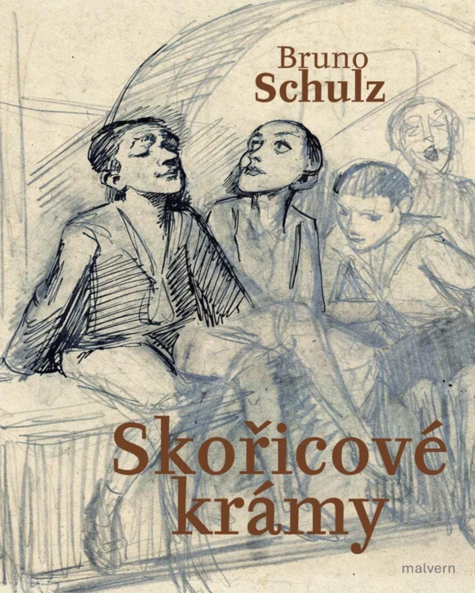
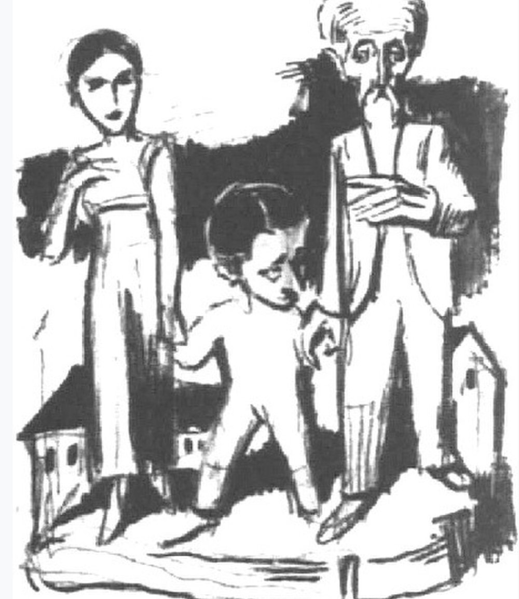
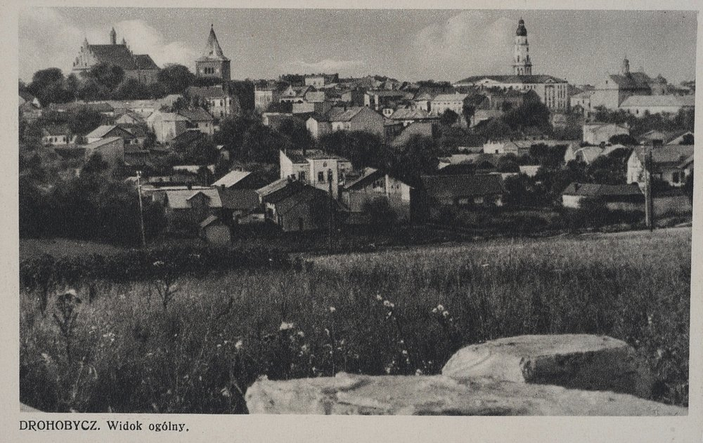
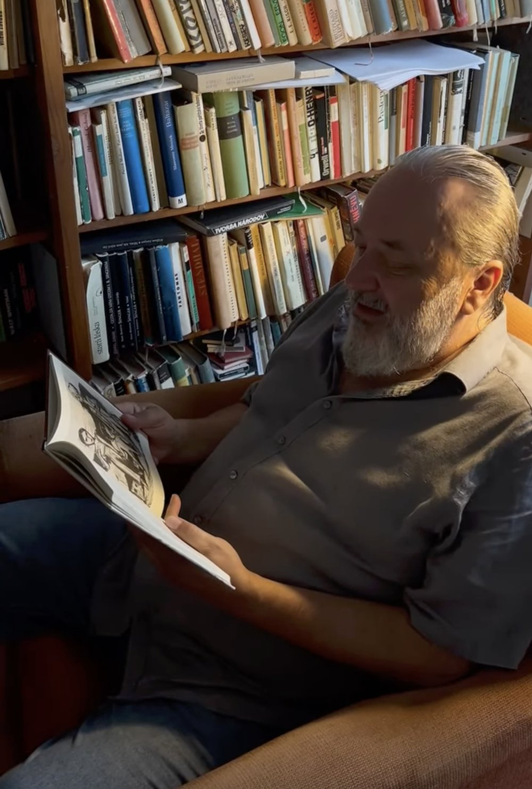
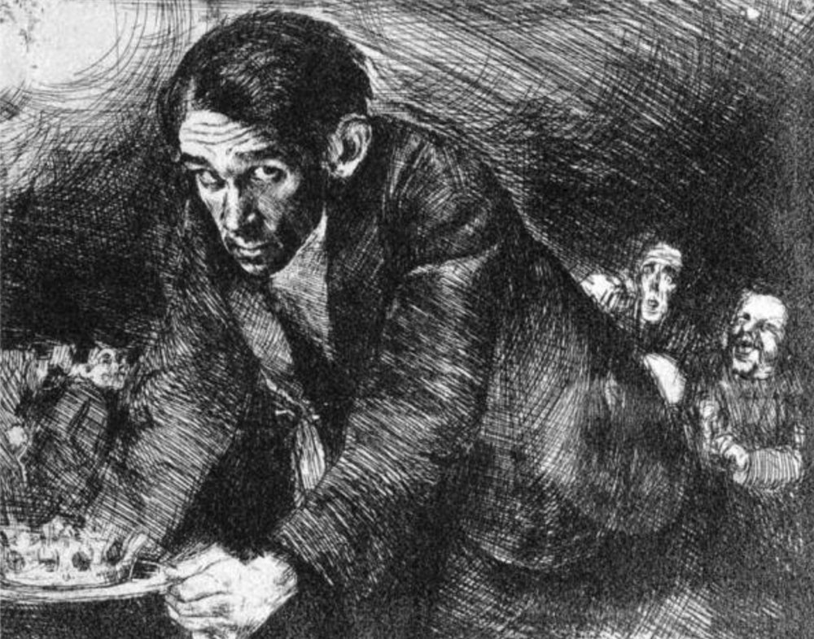
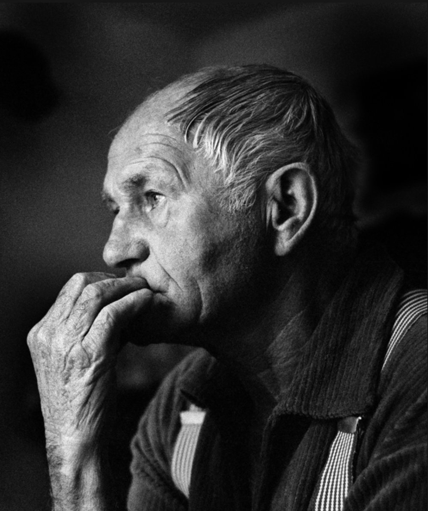
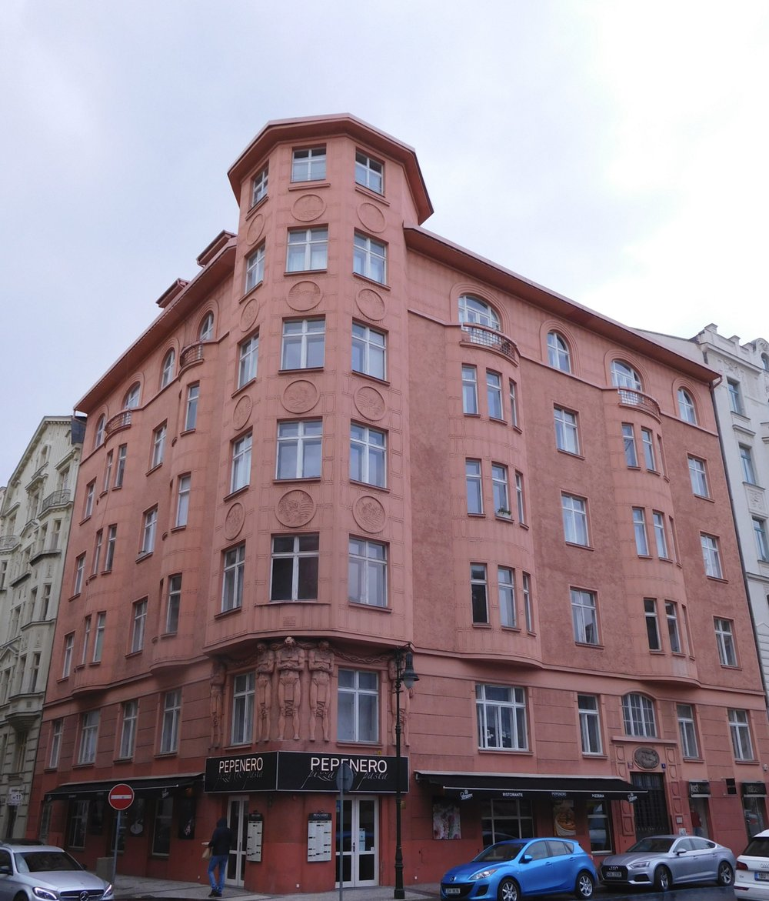
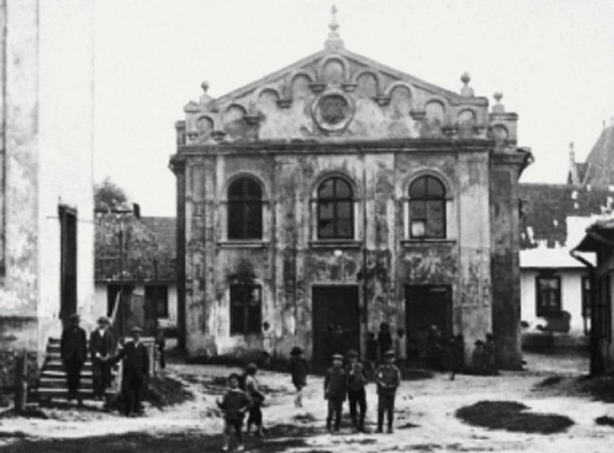
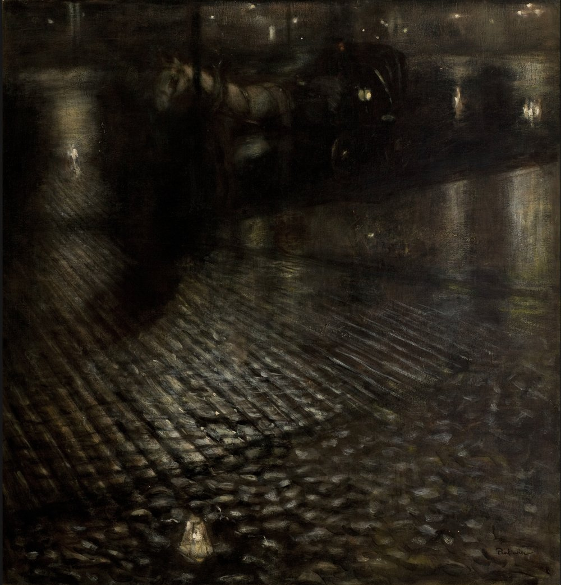

Petr Motýl - Bruno Schulz: Skořicové krámy
Bruno Schulz: Skořicové krámy

Vydalo nakladatelství Malvern v roce 2024. Kresby v knížce a na obálce jsou od Bruno Schulze. Graficky knížku upravil a připravil Jakub Krč, Studio Lacerta.
https://www.malvern.cz/ www.sazba.cz

Kresba Bruno Schulze. Public domain / Wikimedia Commons
Bruno Schulz (1892-1942), prozaik, výtvarník. V Polsku je označován jako „polský Franz Kafka“, což je označení, které se v Čechách nesetkává se souhlasem. Pojem „polský Franz Kafka“ poprvé použil Isaak Bashevis Singer, když jako čerstvý nositel Nobelovy ceny za literaturu mínil Bruno Schulze prosadit v USA, tehdy ruku v ruce s Johnem Updikem a Philipem Rothem.
Wikipedia CZ / Wikipedia PL / brunoschulz.org
Anotace
Skořicové krámy jsou prózou na pomezí s básní v próze, vyniká velmi bohatou obrazností. Tématem je malé městečko v Haliči, Drohobyč, dnes na Ukrajině, v čase vydání Skořicových krámů v Polsku, v čase dětství Bruno Schulze v Rakousko-Uhersku, malé městečko s velikou židovskou komunitou, o níž především Bruno Schulz vypráví.

Drohobycz v čase Skořicových krámů. 1935, Bertold Schenkelbach / Wikimedia Commons / CC BY-SA 2.5
Ukázka z textu, který dal knížce jméno: Skořicové krámy
Nebe té noci obnažilo svou vnitřní strukturu a její anatomické preparáty demonstrovaly spirály a láhve světla, tyrkysové řezy hroudami noci, plástve, tkáně a mízu fantasmat temnoty.
Za takové noci jsem se nemohl vydat z divadla ani Podvalím, ani jinou z těch tmavých uliček, které jsou rubem a jakoby podšívkou čtyř stran rynku, aniž bych si nepřipomněl, že i v té pozdní hodině jsou tam ještě otevřené některé z oněch zvláštních a lákajících obchůdků, na které se ve všední dny tak snadno zapomíná. Pojmenoval jsem je skořicovými krámy, podle tmavého dřevěného obložení, kterým jsou olemované.
Ty vpravdě noblesní obchůdky otevřené do pozdní noci byly vždy předmětem mých horoucích snů.
Byly špatně osvětlené, potemnělé a pompézní, voněly barvami a lakem a kadidlem, voněly dalekými kraji a vzácnými látkami. Měli tu bengálské ohně, kouzelné krabičky, poštovní známky z dávno ztracených zemí, čínské tisky, indigo, kalafunu z Malabaru, vajíčka exotických brouků, vycpané papoušky a tukany a živé salamandry a bazilišky, kořeny mandragory, norimberské mechanismy, homunkuly v kořenáčích, mikroskopy a dalekohledy a hlavně knížky, vzácné, zvláštní knížky, staré folianty plné fantastických příběhů a prapodivných rytin.
Majitelé těch krámků byli staří a úctyhodní a zákazníky obsluhovali mlčky, diskrétně a se sklopenýma očima a vyzařovala z nich moudrost a porozumění pro ta nejtajnější přání klientů. Nejúžasnější v těch uličkách bylo ale jedno nádherné knihkupectví, kde jsem byl jen jednou jedinkrát, tam měli ty nejvzácnější knihy, i ty zakázané i tisky tajných společností, tam, když jsem těmi knihami listoval, jsem nahlédl za oponu opojných a trýznivých tajemství.
Příležitost navštívit ty krámy bývala vzácná, a ještě vzácnější bylo mít při té příležitosti v kapse sice malou, ale postačující hotovost. Nebylo možné nechat si nyní ujít takovou šanci, navzdory vážnosti poslání, jež bylo svěřeno mé přičinlivosti. Bylo ovšem třeba jít jinudy, než kudy jsem původně počítal, že půjdu, vydat se boční uličkou o několik bloků domů dál a pak vklouznout mezi noční krámky, což mě sice notně vzdalovalo od mého cíle, ale počítal jsem s tím, že zpoždění vyrovnám tím, že se zpátky do divadla vydám temnou Solnou uličkou.
Touha spatřit skořicové krámy mi dávala křídla, odbočil jsem a víc jsem letěl, než kráčel, dával jsem přitom ale dobrý pozor, abych nezabloudil.
Kratičká ukázka, kterou čte autor překladu na youtube:
https://www.youtube.com/watch?v=SGm0fRCXsrA

U překladatele doma
Text Petra Motýla v časopisu Tvar, číslo 19/2023. Online dostupné pouze pro předplatitele Tvaru.
itvar.cz/pruvan-z-otevrenych-dveri-zdvihl-zaclony-az-ke-stropu
Průvan z otevřených dveří zdvihl záclony až ke stropu
Bruno Schulz patřil v sedmdesátých a osmdesátých letech v Čechách ke „kultovním“ autorům. Časy normalizace používaly v tomto smyslu ale spíš pojmy „legendární“ či „světový“. Svět tehdy pro většinu obyvatel představoval místo, kam bylo - kromě dovolené v Bulharsku - takřka nemožné se dostat. Neboli být světovým, to znamenalo něco úžasného.
Být světovým autorem, a přitom celý život prožít v provinčním městečku v Haliči. Jak jen to přitahovalo. Drohobyč Bruno Schulze bylo možné symbolicky zaměnit za Čechy jako takové, za provincii za železnou oponou. Za provincii, ve které se všechno rozpadá, která žije mimo čas „opravdového“ světa, ale která je tím svým rozpadáním se a provinčností víc světová než střed světa, než Paříž, Londýn, New York. Jedině v provincii se přece mohou odehrávat tajemné mystické příběhy a odvíjet fascinující osudy, jedině provincie může zrodit zázračná zjevení, které už dávno zmizela z bohatého a kulturního, ale zracionalizovaného prostředí civilizace. Z těch chladných a nezajímavých míst tam někde daleko, daleko. Daleko od Prahy, daleko od Drohobyče.
Spojení mezi šedivou zchátralou Prahou doby normalizace a texty Franze Kafky se v českém intelektuálním prostředí přímo nabízelo. A čeští intelektuálové měli v onom bezčasí, které jako by mělo trvat navěky, spoustu času o té spojitosti uvažovat a diskutovat, nevyrušováni hlukem zběsilého tempa doby.
Hluk a chvat jsou tu až nyní, na počátku dvacátých let dvacátého prvního století. Vřava, kterou to zběsilé tempo vydává, je všudypřítomná a zahltila i Praha - město které vstoupilo do světa a o své provinčnosti už nechce vůbec nic slyšet.
Bruno Schulz byl za oněch dávných časů normalizace jistěže mnohem méně diskutovaným a adorovaným autorem než pražský rodák Franz Kafka. But i o Bruno Schulzovi věděli mnozí. Četlo se tehdy a mluvilo o literatuře mnohem více než dnes. V televizi „nic nedávali“, internet byl neznámým pojmem, kulturně-společenských událostí mimo rámec nudného a šedivého normalizovaného umění se konalo málo, jelikož režim, který držel v rukách moc, něco, co bylo mimo jeho rámec, povoloval jen sporadicky. Nikoho by tenkrát nenapadlo, že pestrý společenský život, jak ho známe dnes, úplně změní smysl slova kultura.
Dnes se chodí po kultuře. Čili se po ní hlučně šlape. Ale texty Bruno Schulza je nutno číst soustředěně a v tichu. A nelze se do nich ponořit dokonce ani na okraji všeobecného kraválu, je třeba z něj úplně vystoupit. Není to čtení do tramvaje, ani to není něco, co by se dalo poslouchat v autě z reproduktorů. Je to četba, která pohltí celého člověka. Se Skořicovými krámy je nutné se z rámusící současnosti naprosto vyčlenit, odložit sluchátka, vypnout telefon i počítač: je to ještě vůbec možné, kdo to dokáže?
V oněch dobách, k nimž se stále vracím – byl to věk mého mládí -, bývalo na čtení času i ticha dost, byť to ticho znělo ponuře. Ale knihy byly tehdy, v určitém prostředí, jistěže, považovány za důležité, za něco, co pro člověka hodně znamená a čím se stojí za to zabývat. A tak i Skořicové krámy Bruno Schulze, četba značně náročná, měla cestu k jistému počtu čtenářů otevřenou. Ovšemže pro lidi, jichž byla většina a kteří nepatřili k okruhu jaksi vybraného a uzavřeného intelektuálního prostředí, navíc stojícího více či méně v opozici vůči panující straně a vládě, zůstával Bruno Schulz neznámým. Ale přece se tehdy i mimo polodisent či hru na něj Bruno Schulz dostal a překročil úzké hranice výlučnosti a kafkárny. Zmínil se o něm totiž, a to docela výrazně, Bohumil Hrabal, autor, který měl v osmdesátých letech stovky tisíc čtenářů. Ano, vím, ten počet se zdá být neuvěřitelný, ale bylo to tak.
Bohumil Hrabal: „Před deseti lety mi překladatel Bartoš daroval knížku, kterou přeložil z polštiny do češtiny, Skořicové krámy Bruno Schulze. Pamatuji si, jako by to bylo dnes, že po přečtení každé půlstrany jsem knížku odkládal a šel se projít, zatmělo se mi z ní před očima, koneckonců i dnes je to stejné, dělá se mi z ní mdlo, tak nezvyklá knížka to je, tak drahocenný a dojemný je to text vstupující do sféry geniality.“ (HRABAL, B. Z czym literatura wkracza w wiek XXI. Literatura na Świecie 1984, No. 4.)
Aby toho nebylo málo, přiznaně inspirován Bruno Schulzem napsal Bohumil Hrabal ve vnitřním napojení se na atmosféru Skořicových krámů prózu Krasosmutnění. Hrabalovo transformování Bruno Schulze vynechává temné barvy a záchvěvy šílenství a preluduje na nostalgické klaviatuře nostalgickou sonátu o malém městě před první světovou válkou. Ve vzpomínání na něco, co nenávratně pominulo, se ovšem oba autoři shodují, jak Bohumil Hrabal, tak Bruno Schulz vidí a vykreslují svá městečka v epoše před oním krvavým převratem, který s jistým zpožděním za kalendářem rozmetal Evropu devatenáctého století. Hrabalova Nymburka se ovšem první světová válka dotkla mnohem méně než Drohobyče v Haliči, městečka, přes nějž prošla fronta a poté se znova, v nastavované první světové válce, na tomto území bojovalo mezi Polskem a sovětským Ruskem. Popisuje to Isaak Babel v Rudé jízdě. Buďonného 1. jízdní armáda – Babelova Rudá jízda – sice přímo o Drohobyč nebojovala, židovské městečko Drohobyč, to je ale přesně jedno z těch, které v Rudé jízdě Babel popisuje. Říkám ovšem nepřesně, že přesně jedno z těch židovských městeček, Drohobyč byla v něčem jiná, úplně jiná.
V okolí Drohobyče se těžila od osmdesátých let devatenáctého století nafta a u drohobyčského nádraží vyrostla rafinérie. Bruno Schulz se naftového průmyslu, který vnímá jako cizorodý, dotýká ve Skořicových krámech vlastně jen v textu Krokodýlí ulice, jinak nechává svět „krokodýlů“, dravců zabývajících se jiným než tradičním podnikáním a žijících jiným než tradičním židovským způsobem života, stranou svého díla. Jako kdyby žádné ropné vrty v okolí Drohobyče neexistovaly, jako kdyby mladší bratr Bruno Schulze nezbohatl na obchodu s ropou. Ale přece je ve Skořicových krámech svět, do nějž z Drohobyče proudí ropa, svět nacházející se tam daleko, daleko, pořád vnitřně přítomný jako protiklad, který autor neustále přikládá k poměrům zvetšelé provincie a kterým městečko, kde se zastavil čas, poměřuje.
Prózy Bruno Schulze se o to překotné a převratné dění, o ropu ani o válku, zdánlivě nezajímají, ale přece v těch textech všechno to vření a bouře jsou přítomny pod povrchem a tikají tam jako časovaná bomba. Zdánlivě se ale všechno odehrává v úzkém kruhu tradiční židovské rodiny, všechno je soustředěno v domě, v němž rodina bydlí, všechno spočívá v rodinných záležitostech.
Nečitelněji je radikální proměna světa, kterou Bruno Schulz zažíval, v jeho textech zpřítomněna v postavě otce, vyhnaného krále, který ztrácí svůj trůn, své patriarchální postavení, kolem nějž víří nepochopitelné, před nímž není vyhnutí. Dům okupují švábi, dům zaplaví cizokrajní ptáci vypěstovaní otcem z vajec, otec blázní, srůstá se skleněným a gumovým přístrojem, symbolem nových vynálezů techniky, měni se ve švába, jako se v povídce Franze Kafky mění její postava v hmyz. Svět, který postava otce zosobňuje, odcházející svět, ztracený svět, vypravěč miluje, ať už je coby chlapec přítomen přímo v textu, nebo ať vypráví jako vypravěč vševědoucí.
Co teprve přijde, co musí přijít, to autor vyciťuje, když líčí svět figurín, zčásti homunkulů, zčásti fantómů, zčásti robotů. Něco z jeho vize se naplňuje až v současnosti, něco se naplnilo už za autorova života. Přišla druhá světová válka, Drohobyč nejdříve obsadil v rámci dohody s Německem Sovětský svaz, posléze Němci postoupili směrem na východ a pány Drohobyče se stali oni. V listopadu 1942 Bruno Schulze zastřelil německý důstojník. Vojáci mechanicky plní rozkazy, ale jsou zároveň svévolní. Schulzovy figuríny a jeho děsiví, strojoví a zároveň nevypočitatelní švábi.
Rovin je v Schulzových textech více. Vizionářství lehce sklouzávající přes nikdy nejistou hranici do hájemství šílenství. Komplikovaně v postavě otce, děsivěji v postavách, které mají ve Skořicových krámech méně prostoru, ale jsou popsané s obrovskou intenzitou, tak, že na ně čtenář jen tak nezapomene. Tulák, kterého chlapecký vypravěč najde v lopuší na konci zdivočelé zahrady za domem. Pološílená dívka žijící na smetišti.
Erotické motivy. Bruno Schulz kromě psaní i kreslil, část jeho kreseb se dochovala. Oproti širokému spektru záběru na židovské městečko, kterým jsou autorovy prózy, jsou tématem většiny jeho kreseb ženy a atmosféra takřka všech kreseb je vypjatě, zahuštěně erotická. Modely mnoha Schulzových kreseb byly prostitutky z „Krokodýlí ulice“ čili z části Drohobyče, kde žili lidé závratně bohatnoucí na obchodu s ropou. Ta vyostřená erotika Skořicovými krámy spíše jen v záblescích prokmitává a elektrizuje. Prodejné ženy se texty Bruno Schulze jenom mihnou, hlavní erotickou roli ve Skořicových krámech hrají chudé dívky ze štetlu, tedy z židovského městečka, které žije podle starých zvyklostí. Jednak je to služka Adéla, která do domu tradiční židovské rodiny vnáší neustálé dráždivé napětí, jednak dvě dívky, které chodí po večerech do domu šít šaty. „Průvan z otevřených dveřích zdvihl záclony až ke stropu a dívky se nechaly prohlížet a vzbuzovaly touhu, vlnily se v bocích, poblýskávaly očima, povrzávaly lakovanými střevíčky a ukazovaly přezky podvazků pod sukněmi, které nadzdvihával proudící vzduch.“
Tolik krátce o Bruno Schulzovi a jeho Skořicových krámech, o autorovi, jak jsem poznamenal v úvodu těchto řádek, v Čechách druhdy „kultovním.“ A teď něco o mém překladu.
Už dlouho jsem na ten překlad myslel. A nakonec mě postrčil básník Jakub Řehák, i když on tvrdí, že si tu klíčovou scénu vůbec nepamatuje. Bylo to v sobotu 4. září 2021, sešli jsme se ještě se surrealistou Janem Gabrielem, seděli jsme v restauraci Jelica v Praze na Zlíchově se svými partnerkami a vzpomínali jsme na Petra Krále, který bydlíval sto metrů od té hospody, byl to den jeho nedožitých narozenin. A pak jsme ještě pili chartreusku přímo před dveřmi domu, v němž Petr Král zemřel. A tam jsem dal Jakubovi Řehákovi ruku na to, že přeložím Traktát o manekýnech ze Skořicových krámů, protože on by si ho rád přečetl v mém překladu. A já to časem udělal a přidal jsem celou tu knížku, v Čechách většinou vydávanou v jednom svazku se Sanatoriem na věčnosti.
Když jsem Skořicové krámy přeložil, zjistil jsem, že v mladší generaci, míním tím v okruhu lidí zajímajících se o literaturu, už Bruno Schulze prakticky nikdo nezná. Jistě, jsou výjimky, jinak by nemohlo dojít ani k překladu, do kterého mě postrčil Jakub Řehák, ani k publikaci ve Tvaru. Někdo mladší než já musel ve Tvaru Bruno Schulze znát a mít jeho texty rád. Ale jinak… Nová vydání starého překladu přitom vyšla po r. 1989 několikrát neboli zájem čtenářů nějaký musel být, jinak by Bruno Schulze nikdo nevydával. Jsou všichni ti kupci a čtenáři jen mé a starší generace, tedy šedesát plus? Rád bych se pletl. Rád bych věřil, že se komplikované texty Bruno Schulze nestaly nesrozumitelnými, že stále oslovují další generace. Ale není to jen přání, zbožné přání? A jestli je to jen přání, kdo ten můj nový překlad bude číst? Staří fanoušci a fajnšmekři jsou zvyklí na překlad, který znají, žádné novoty nepotřebují. A noví čtenáři? Jsou vůbec?
Předchozí překlad Skořicových krámů je starý padesát let, myslím, že texty Bruno Schulze už trochu oživení zasloužily. Ten padesát let starý překlad je velmi slušný, jeho jazyk ale přece jen poněkud zastaral. Na druhou stranu, to že je ten starý překlad - viděno dnešníma očima - už maličko nesrozumitelný, mu dodává na tajemnosti a na jisté nepochopitelnosti a činí ho to brunoschulzovsky přízračným, ten překlad přímo voní nostalgií. Ale třeba se ten můj, vzhledem k mému fyzickému věku, bude zdát čtenářům zrovna takový, už antikvární, sotva vznikl – jen já to nevidím.
Kdo ví, třeba ti mladší čtenáři rázně otevřou okno, jako služka Adéla v textu Ptáci, zaútočí smetákem na ptačí vojsko a vymetou ten můj překlad. Anebo ne – a stane se, co bych si přal? Totiž, že se šindelová střecha mého překladu promění v archu Noemovu, na niž se budou slétávat opeřenci všeho druhu zblízka i zdálky.

Bruno Schulz Autoportrét, asi 1920 – 1922. Public domain / Wikimedia Commons
Nejčastěji pokládané dotazy a další dotazy
Jak dlouhou jsi překládal Skořicové krámy, Petře?
Trvalo to rok, Petře. Ale to jistě víš, protože ty jsi já a já jsem ty.
Ale čtenáři to neví.
Teď se do dozvěděli.
Není to málo, jeden rok na překlad?
Ta knížka mi leží v hlavě dlouho a dlouho, poprvé jsem jí četl, když mi bylo dvacet nebo něco přes dvacet, a to v Ostravě, kde jsem se hmoždil se studiem na Pedagogické fakultě. Jedním z mála kladů toho studia bylo, že fakultní knihovna, Městská knihovna a Vědecká knihovna v Ostravě oplývaly množstvím titulů, které byly v Praze téhož času, v osmdesátých letech dvacátého století, dávno rozkradené. A tak tam tehdy byl Bruno Schulz dostupný úplně normálně, s knihovní průkazkou. Mělo to samozřejmě tu regionální nevýhodu, že nebylo s kým se o Bruno Schulzovi bavit, v Ostravě tehdy náročnější literatura zajímala opravdu jenom pár lidí, a ti se navíc navzájem neznali, nebylo kde se potkávat, žádný společenský literární život, který by byl alternativou k oficiální komunistické linii, na Ostravsku v osmdesátých letech dvacátého století neexistoval. Byl to divný svět, na stejném čtyřletém gymnáziu jako já, když jsem nastoupil do prvního ročníku, tak ve čtvrtém studovali Jan Balabán a Jarda Žila a ve stejném ročníku jako já Petr a Pavel Hruškovi. O tři roky níž než já posléze nastoupil na ten gympl můj bratr Ivan Motýl a Milan Krupa. Ale navzájem tam kontakt nebyl, vůbec žádný. Žádné studentské časopisy, žádná čtení mladých literátů ve školní knihovně, nic. Setkání přišlo až mnohem později, v zásadě se to rozběhlo až na začátku r. 1989. To už jsem měl absolvovanou neblahou ostravskou Pedagogickou fakultu.
Ono to právě k Bruno Schulzovi sedělo, k jeho životu na provincii, v Haliči, v nějakém přeludném, úzkostném světě. S tehdy proletářskou Ostravou mi hodně souzněla rovina Schulzova díla, která zobrazuje život těch nejchudších v Drohobyči, vyvržených až doslova na smetiště společnosti. A byl to důkaz, jak vynikající, naprosto světová literatura může v takovém koutě Evropy, na jejím úplném okraji, vzniknout. Tak jsem o tom tehdy snil, že to v Ostravě jde taky. A netušil jsem, že Bruno Schulz je mimo Polsko autorem jen pro pár čtenářů, byť třeba úžasných čtenářů, velkých spisovatelů nebo výtvarníků a filmařů.
K překladu bylo ještě daleko, ale tu knížku, ke které jsem se vracel, jsem prostě postupně hodně dobře poznal. Nahlédl jsem do ní i v polštině, ale té složité polštině jejích stránek jsem, když mi bylo dvacet, nerozuměl, to až později.
Ale teď jsi zamluvil, co tě k Bruno Schulzovi přivedlo...
Ano, díky za připomínku. Byl to samozřejmě Bohumil Hrabal, který na Bruno Schulze upozornil i mnohé jiné v Čechách. Bohumil Hrabal se o Skořicových krámech zmínil v rozhovoru v Domácích úkolech z pilnosti, které vyšly v roce 1982. Nuže:
„A jaká jsou vaše města, kde se cítíte doma?
Vídeň, Budapešť, Lvov, Příbor, Budějovice, Mikulov, ale nejvíc se cítím doma tam, kde jsem ještě nikdy nebyl, kam mne ale zavedl Bruno Schulz ve svých Skořicových krámech. To je moje nejkrásnější město na světě, které už není, a tedy asi proto. Bruno Schulz, kterého jakýsi německý voják za druhé světové války zastřelil na náměstí, jen proto, že byl Žid.
Kde byste dneska chtěl bydlet?
Jak jsem řekl, v Drohobyczi, od té doby, co jsem přečetl Skořicové krámy, já jsem se tam odstěhoval a bydlím tam dodnes, i když jsem tam nikdy nebyl, ale co má být? Fikce je někdy dokonalejší a realističtější, než sama skutečnost.“
Ještě něco k Bohumilu Hrabalovi ve vztahu k Bruno Schulzovi?
Dříve, než to Bohumil Hrabal v Domácích úkolech z pilnosti řekl přímo, pozorný a vzdělaný čtenář mohl rozpoznat vliv Bruno Schulze na Postřižiny (1976) a především na Krasosmutnění (1979). Samozřejmě těch vlivů je tam víc, a to úplně hlavní je, jak to, co Bohumil Hrabal měl v literatuře rád, dokázal přetvořit k obrazu svému a včlenit do svého vlastního literárního stylu.
Já jsem ale, jako mnozí jiní, když jsem oslněn četl Krasosmutnění, Bruno Schulze vůbec neznal. O tom literatura také je, kromě mnohého dalšího, totiž že předává poselství, štafetu, kontinuitu. Maličko obměňuje výraz v čase a prostoru.
Tady je ukázka z Krasosmutnění, ukázka Skořicovým krámům obzvláště blízká:
„A na kočičích hlavách dláždění plynové světlo pomazávalo kameny máslem a stíny zmizely a z ulice městečka se stala krápníková jeskyně a vápencem potažená sluj. Na náměstí a hlavní ulici chodci prošlapovali ten studený třpyt, ale v uličkách plných kalužin se dláždění kočičích hlav lesklo jak lysé lebky pobožných starců, když poklekali v kostele a pan děkan jim dával do úst svatou hostii. Pan Rambousek, když pršelo, tak nosil tvrďák a jeho černý navoskovaný kabátek se leskl deštěm, každou chvíli se pan Rambousek předklonil a z obroučky tvrďáku se vylila voda, která ve světle plynových luceren se třpytila jako rtuť. Když foukal ostrý vítr, tak jen hvízdal kolem tiše předoucích lamp, jen vichřice pohnula krátce přistřiženým plamenem. Déšť, který stékal po tabulkách luceren, potemněl uličky a chodci se skloněnými hlavami se drali domů nebo do hostinců. Ale já jsem kráčel za panem Rambouskem s hlavou vztyčenou, jako bych byl plynovou lampou. Kráčel jsem a těšil jsem se, až pan Rambousek se zase někde předkloní a z hlavy mu vyteče a na zem za zapleská rtuť. Za takového večera jsem jednou poprosil pana Rambouska, aby mi dovolil rozsvítit jednu jedinou plynovou lampu...“

Bohumil Hrabal, 1988. Foto: Hana Hamplová / Wikimedia Commons / CC BY-SA 3.0
K základním autorům Bohumila Hrabala patřil také Franz Kafka. V Polsku je zavedené označení Bruno Schulze „polský Kafka“, v Čechách se tahle škatulka setkává s nesouhlasem. Například na Databázi knih říká šifra Apo73 toto:
„Polský Franz Kafka!“ píše se na obalu knihy. Člověka to zaujme, čte to jako "polského Franze Kafku" a je zklamán. Kafka je jenom jeden. Ano, člověk se nechá nachytat na nakladatelskou marketingovou fangličku. A přitom to textu vlastně ubližuje. Dobrá, odhlédněme od toho.“
Napsal jsem k tomu stručně právě na Databázi knih:
Pojem „polský Kafka“ použil pro Bruno Schulze v titulu své obšírné a kladné recenze tehdy čerstvý nositel Nobelovy ceny za literaturu Isaak Bashevis Singer. Recenze vyšla na titulní straně The New York Times Book Review 9. června 1978. O rok později vydal ve své edici východoevropských autorů knižní překlad textů Bruno Schulze Philip Roth s doslovem Johna Updika, který vyšel rovněž v The New York Times Book Review s titulkem Hidden Genius.
Snaha o prosazení Schulze v USA byla veliká, ale směrem k širšímu publiku se to nezdařilo. Pojem „polský Kafka“ se ale ujal v Polsku. Tuto „polskou nálepku“ převzalo nakladatelství Malvern.
Tolik na vysvětlenou.
Netušil jsem, jaký de facto negativní ohlas označení „polský Kafka“ vyvolá. Jistěže jsou Kafka a Schulz v mnohém odlišní autoři, ale je tu i dosti souvislostí. Franze Kafku a Thomase Manne uvádí ve svých dopisech a denících Bruno Schulz jako své jediné přiznané literární vzory. Ovšemže nevycházel jenom z nich. U Schulze je zásadní (stejně jako u Kafky) vliv židovské tradice, i když oba vyrostli v rodinách, které synagógu pravidelně nenavštěvovaly, a kde se denně posvátné knihy nestudovaly. Vztah k starozákonnímu Bohu je u obou autorů komplikovaný, ale řeší ho stále. Stejně jako vztah s autoritativním otcem, jakýmsi zástupcem Otce na této zemi.
Kromě spojitostí je snadné najít mezi Kafkou a Schulzem odlišnosti, Kafkův literární styl je přesný až úřední, Schulz píše květnatě a horečně.
Bruno Schulz přeložil Kafkův Proces, či se tak donedávna soudilo, jelikož tento první překlad Kafky do polštiny a jeden z ranných překladů Kafky v Evropě (z románů poprvé Zámek ve Francii r. 1928, polský Proces je z r. 1936), vyšel pod Schulzovým jménem. Dnes však polští literární vědci soudí, že překlad Procesu je z ruky tehdejší Schulzovy snoubenky Josefy Szelinské a podíl samotného Schulze na tomto překladu je pouze poradní a korektorský.
Bruno Schulz každopádně psaní o osm let staršího Franze Kafky velmi obdivoval. Franz Kafka prózy Bruno Schulze znát nemohl, ty vyšly tiskem až ve třicátých letech.
Nicméně jedna Kafkova povídka, Venkovský lékař, v Kafkově díle dosti výjimečná svou odlišností od obvyklého Kafkova stylu, má k prózám Bruno Schulze velice blízko.
Onen venkovský lékař, který byl pro Kafkovu povídku inspirací, byl Kafkův strýc Siegfried Lévy, který když odešel na odpočinek, bydlel v podkrovním bytě v domě na pražském Josefově a zde i zemřel. Dostal předvolání k transportu do Terezína, ale na nádraží v Praze-Bubnech se nedostavil, v noci předtím si píchl smrtící dávku morfia. Povídka Venkovský lékař se vztahuje k době, kdy ještě Siegfried Lévy byl lékařem v městečku Třešť, je to poblíž Telče. V této povídce se Kafkův styl značně odpoutává od své jasnosti a přesnosti.
Pro mě je ta odbočka do ulice Elišky Krásnohorské (tak se ta ulice dnes jmenuje), kde Siegfried Lévy bydlel, osobní. Česká televize zde se mnou natočila krátký propagační klip o Skořicových krámech pro pořad Události v kultuře. Zvolil jsem kavárnu Božská lahvice právě v ulici Elišky Krásnohorské, pan redaktor Tadeáš Hlavinka byl informovaný a připadalo mi, že ho téma zajímá. Takže jsme seděli v kavárně naproti domu, který patřil rodině Kafkových, Hermann Kafka ho koupil pro dcery. Franze z vlastnictví domu vyloučil, a tomu to zřejmě nevadilo. A pak jsem viděl, co z toho v České televizi udělali, inu, kdo ví, kdo všechno do toho zasahuje. Tak on je to – naštěstí pro mě - tak bezvýznamný šot, že o něm vlastně nikdo neví. Ovšem byl jsem velmi, velmi zklamaný. Místo literatury politika a senzace, nesmyslné ukázky z filmu, v závěru cosi, co by se dalo nazvat útokem na Bruno Schulze, ne tak jsem to opravdu nechtěl...

Roh ulic Elišky Krásnohorské a Bílkovy, dům rodiny Kafkovy. Foto: Jiří Matějíček / Wikimedia Commons / CC BY-SA 3.0
Odkaz na šot v České televizi:
ct24.ceskatelevize.cz/clanek/kultura/skoricove-kramy-vtahnou-do-rodiste-polskeho-franze-kafky-351915
Polský Kafka?
Ano, ale ani český Kafka není špatný. Nebo Bohumil Hrabal. Ale tou otázkou je míněno, že bych se měl vrátit k Bruno Schulzovi?
Přesně tak.
Brzy poté, co jsem Skořicové krámy poprvé četl, jsem se s nimi setkal v představení polského divadla Teatr im. mjr. Szmauza. Bylo to divadélko z Českého Těšína, amatérské, ale působící velmi profesionálním dojmem. To představení v polštině mělo obrovskou atmosféru, bylo to pro mě něco úžasného, byl to jeden z mých životních divadelních zážitků. Režíroval Janusz Klimsza, tehdy, pokud vím, student DAMU, který se posléze stal režisérem především v ostravských divadlech. Nikdy už jsem od něj nic tak dobrého neviděl... To prohlášení jistěže není objektivní, šlo o nadšení mládí a idealizaci setkání s něčím novým, za socialismu výjimečným. No ano, paměť klame, ale co jiného mám, než svoje vzpomínky...
To divadelní představení mám spojené s městečkem, které jako by se ten večer proměnilo v Drohobyč, byla to tenkrát přehlídka amatérských divadel ve Valašském Meziříčí. Dodnes si vybavuju ten pocit, když jsem po brzké zavíračce prostor, kde se festiválek konal, vyšel na náměstí, a tam nebyli vůbec žádní lidé, svítilo jen pár lamp, jak to tenkrát bývalo, a já se v tu chvíli ocitl někde daleko v čase a prostoru...
Skořicové krámy se pro mne staly knihou, ke které jsem se znovu a znovu vracel, a když jsem začal něco málo překládat z polštiny, to už mi bylo pětačtyřicet, na Skořicové krámy jsem jaksi zcela samozřejmě pomýšlel, no ale dlouho jsem pro to nic konkrétního nedělal. Pustit se do práce mě přimělo až přání básníka Jakuba Řeháka, byl to dokonce slib stvrzený podáním ruky, to už mi bylo šestapadesát. Jelikož jsme tehdy byli poněkud opilí, zjistilo se později, že Jakub Řehák si na ten slib vůbec nepamatuje. A taková to byla slavnostní chvilka. Stáli jsme ve výroční den úmrtí básníka a znalce surrealismu a filmu Petra Krále před domem, ve kterém Petr Král zemřel, měli jsme láhev chartreusky, byl tam s námi ještě surrealista Honza Gabriel. Já na ten slib nezapomněl a přeložil jsem Schulzův Traktát o manekýnech (přezval jsem ho na Trakát o figurínách), jak to po mně Jakub Řehák chtěl. A pak jsem pokračoval a během roku jsem přeložil Skořicové krámy celé. V Čechách obvykle vycházejí v jednom svazku se Schulzovým Sanatoriem na věčnosti, ale do toho překladu jsem se nepustil a už nejspíš nepustím. Ostatně Skořicové krámy se mi vždycky líbily víc.
Skořicové krámy jsem překládal jako báseň v próze, vidím jejich texty trochu jinak, než jak vypadají v zatím jediném českém překladu, který vyšel v roce 1968. Ten starý překlad je dobrý, je z něj hodně cítit, když už je nyní možné se na něj dívat z odstupu, atmosféru šedesátých let, jak jinak, tomu tak je u překladu vždycky, že odráží svou dobu. Zdůrazněná je v překladu Otakara Bartoše a spol. rovina intelektuálních her šedesátých let a zaumných experimentů, vstupování do labyrintů jazyka a labyrintů pokřivené doby. Z mého překladu více vyvstává do popředí hledání ztraceného času, mistrovské autorovy popisy zaniklého světa haličského městečka Drohobyče, uliček, v nichž většinu domů smetly dvě světové války, které se Haličí přehnaly, a básnické obrazy fantastických světů, které se uvnitř domů někde v zapadlé provincii otevírají, stačí vzít za vrzající dvířka v chodbě plné šera a tajemství.
Ještě něco o filmu, o kterém se tu vyjadřuješ spíš přezíravě...
To ne, to jsem myslel jen nepovedený klip pro ČT. Televizáci v něm použili ukázku z filmu bratří Quayových, totiž The Brothers Quay, skloňování v češtině zní poněkud zvláštně. Ti natočili v roce 2016 podle textů Bruno Schulze animovanou Ulici krokodýlů https://vimeo.com/669457459 a v roce 2022 částečně animovaný a částečně „dokumentární“ film o Bruno Schulzovi The Art Teacher from Drohobycz https://www.youtube.com/watch?v=mXVsb25uGlE
The Brothers Quay se pokusili – jako o něco dříve jako Singer, Roth a Updike - zpopularizovat Bruno Schulze v anglofonním světě, ale ani jim se to nepodařilo. Skořicovým krámům to zkrátka není předurčeno, jejich cesta je jiná.
V šedesátých letech dvacátého století vznikla v Polsku filmová adaptace Sanatorium na věčnosti, ve které se prolínají motivy z celého Schulzova literárního díla. Film si odnesl cenu poroty na festivalu v Cannes v r. 1973 a v Polsku panuje iluze, že ten film je světoznámý. Tak jako si to v Čechách myslíme třeba o Ostře sledovaných vlacích.
Bruno Schulze film zajímal a jeho starší bratr Isidor Schulz, který byl v Polsku naftovým magnátem (v okolí Drohobyče se těžila ropa) a zaplatil vydání bratrovy knižní prvotiny, Skořicových krámů, na vedlejšák působil rovněž jako magnát v oblasti polského filmu v čase jeho počátků. Isidor Schulz provozoval v Polsku několik kinosálů, jedno z jeho kin bylo i v jeho rodné Drohobyči. Isidor Schulz zemřel v r. 1935 a starost o drohobyčskou část rodiny - ovdovělou sestru bratrů Bruna a Isidora, a její dva syny (všichni později zahynuli v drohobyčském ghettu) - zůstala na Bruno Schulzovi a jeho učitelském platu.
Nafta a film, obory na počátku dvacátého století typické pro americkou Kalifornii. V těchto oborech se v Americe výrazně prosadili právě polští Židé. Warner Brothers založili čtyři sourozenci Aaron, Szmuel, Hirsz a Jacek Wonsal pocházející z vesnice Krasnosielc, Samuel Goldwyn z Metro-Goldwyn-Mayer, než emigroval do Ameriky, se jmenoval Šmuel Gelbfiš a byl z rodiny varšavských chasidů.
Hollywoodu se často říká továrna na sny, jedno z českých vydání próz Bruna Schulze nese titul Republika snů. Sny, které se nějakým způsobem vyvázaly ze Starého Zákona, z pracoven rabínů a z učeben talmudistů, se v Hollywoodu jaksi zhmotnily na filmovém plátně. Přičemž se jedná o výhonek stejné, jak říká Bruno Schulz, prapůvodní matérie, ze které vznikají jeho prózy. Jasnou spojitost má i Schulzova teorie manekýnů a používání herce jako loutky k vytváření umělých světů na filmovém plátně.

Stará synagoga v Drohobyči, 1921. public domain / Wikimedia Commons
Ale filmem končit rozhovor nebudeme...
To by byl průšvih.
Vyzdvihl bych grafickou úpravu knížky, která se Jakubovi Krčovi moc povedla. Pěkný formát knihy, pěkné písmo, ale ne zas, že by to bylo celé až moc vypěkněné, je to tak akorát a k textům Bruno Schulze to pasuje.
A taky by se na závěr hodilo například zařadit Bruna Schulze geograficky k autorům z míst převážně se nyní nacházejících na válkou zmítané Ukrajině. Válečná historie té krajiny je dlouhá a nešťastná, ale to přenechám historikům. Z pohledu literárního tu žilo mnoho významných spisovatelů, Poláci se hlásí k Zbigniewu Herbertovi a Stanislawu Lemovi, kteří pocházejí ze Lvova, k Jaroslavu Iwaszkiewiczovi, který vyrůstal o pěkný kus dál na východ Kropywnickém nebo k „prorokovi Huculů“ Stanislavu Vincenzovi, který studoval rovněž ve Lvově a jehož rodina, tak jako Schulzova, byla zainteresovaná v těžbě haličské nafty. Národní ukrajinský básník Ivan Franko přímo v Drohobyči navštěvoval poslední ročníky základní školy a poté zde absolvoval gymnázium (to gymnázium, na kterém posléze učil Bruno Schulz).
Je třeba říci, že geografické vzdálenosti se tu pojímaly jinak, rodina Iwaszkiewiczů jezdila na letní byt na Krym nebo do Oděsy (ano, ovšem, město v čase kolem první světové války velmi literární), kde bývala polská enkláva. A Židé ti tam byli všude, v tradici povoleného bydliště pro Židy v rámci nejvíce evropské časti carského impéria, které jinak oplývalo mnohými protižidovskými zákony.
V Haliči se odehrává Rudá jízda Isaaka Babela napsaná rusky. V Botosani, což je dnes úplně na severu Rumunska, žil Max Blecher, židovský autor, v jehož textech, které vyšly i v českém překladu z rumunštiny, je příbuznost s dílem Bruno Schulze snadné nalézt, ač je Blecher označován spíše jako „rumunský Kafka“... Bylo by možno pokračovat...
Ze svého „zlatého fondu“ bych jmenoval jen tři autory... Ne, nemůžu vynechat Devět bran Jiřího Langera ani povídky Isaaka Bashevise Singera... Tedy tři autory, což je za prvé pomístně poněkud vzdálenější, ale pro mě nepominutelný Nikolaj Vasiljevič Gogol, Ukrajinec píšící rusky, za druhé Polák, který psal francouzsky, Jan Potocki (narodil se v Pilkowě, na půli cesty mezi Kyjevem a Lvovem a poblíž strávil i závěr života a zemřel tu), a za třetí Žid, který psal polsky, Bruno Schulz. Něco z Potockého (z polštiny) a Schulze jsem přeložil, čímž jsem si naplnil dávný sen, na překlad Gogola se nechystám, ten poslední od Milana Dvořáka je vydařený. Ty tři autory spojují přízraky, které v oněch místech přebývají, a Gogola a Schulze také básnický jazyk, velice obrazný. U Potockého fantastika přebývá v příběhu, zatímco jeho styl je povětšinou přesný a suchý (inu, jako u Franze Kafky).
Styl a jazyk. To, jak slyším v hlavě texty Bruno Schulze, jsem už za celá desetiletí, která uplynula od mého prvního setkání s nimi, měl ujasněno, ovšem bylo to v abstraktní rovině, slovy nesdělitelné. Ale věděl jsem, k čemu se slovy při překládání chci přiblížit. De facto při překládání vůbec nejde o znalost polštiny či třeba angličtiny, i když může to samozřejmě být velkou výhodou, pokud jde o „dvojrodný“ jazyk, jako tomu bylo u Pavla Eisnera či u Ivana Wernische, který dvojrodnou němčinu sice podle svého tvrzení zapomněl, ale pak si na ni zase vzpomněl. K polštině mám na tenhle způsob blízko, už jako dítě v kočárku jsem se setkával s „pruskou moravštinou“, nářečím mé babičky z Ludgeřovic, z vesnice na „Prajské“ poblíž Ostravy. Němčiny v prajském nářečí není mnoho, a pokud je přítomná, tak v rovině lexikální, k rytmu polštiny v její slezské formě má tento dialekt velice blízko. To mi utkvělo z dětství. A když mi bylo jedenáct, naše rodina se přestěhovala do Ostravy a tam byla slyšet jak ostravština, tak polština, pro dítě, které vyrostlo v západočeských Klatovech, to byl jiný jazykový svět. Takže o tu znalost jde a nejde, tak jak je to většinou se vším, jde překládat různě. Každopádně naučit se cizí literární jazyk je běh na dlouhou trať. Jen sem a tam se to někomu povede, většinou v emigraci, jako Petru Královi.
Moje překládání je ve srovnání s někým, kdo se tomu „skutečně“ věnuje, jen marginální, ale na druhou stranu si vyberu jenom to, co opravdu chci přeložit, a jenom tak to pro mě může mít smysl, jak jsem se přesvědčil i prakticky, když jsem před patnácti lety dostal nabídku na nový převod básní pro děti Tadeusze Brzechwy. Nešlo mi to od srdce. Zkusil jsem to, ale tu chybu už bych nerad opakoval.
Důležitější při překladu je čeština, než jazyk, ze kterého je překládáno, na což se v po r. 1989 úplně zapomnělo či to tak bylo úmyslně, v rámci teorií spiknutí, zorganizováno, aby čeština byla postupně upozaďována a upozaďována, obzvláště oproti imperiální angličtině, a posléze zcela zlikvidována. To už znali staří Římané, nic nového. Jazyk vnímá svět, prostřednictvím jazyka se náš vztah ke světu formuje. Jak se to v současnosti vyjevuje na příkladu umělé inteligence. Takže je možné oslavovat „proroka“ Viléma Flussera, který teorii v tomto duchu zformuloval už dávno, no ale hlavně je Vilém Flusser z Prahy, vyrostl v Bubenči a na gymnázium chodil do Štěpánské na Nové Město. Pro připomenutí, názvy oddílů Flusserovy knížky Jazyk a skutečnost: Jazyk je skutečnost. Jazyk formuje skutečnost. Jazyk tvoří skutečnost. Jazyk rozšiřuje skutečnost.
Ano, ale?
Předpokládejme tedy, že základní je, že přeloženou knížku bude číst český čtenář v češtině. Takže by měla především znít patřičně česky. K čemuž je třeba dobře znát českou literaturu, nikoliv mít „jazykové kompetence“, které se Čechům snaží vnutit spiknutí imperialisté.
Utkvělá představa?
Ano, mít utkvělou představu, abstrakci překládaného titulu, která vychází jak z textu samotného, tak z toho, co je „za textem“. A mít – samozřejmě – přehled o dobovém kontextu, ze kterého autor vycházel. V mládí jsem netušil, že Bruno Schulze ovlivnil Thomas Mann, nebyl to můj oblíbený autor, ale postupem let jsem si celé Mannovo dílo v češtině vydané přečetl a souvislosti Skořicových krámů s rannými povídkami Thomase Manna se mi vyjevily. Nebo se začátkem Zpovědi hochštaplera Felixe Krulla, knížky, kterou Thomas Mann dokončoval a nedokončil ve stáří a která má dvě úplně odlišné stylistické roviny (Eisnerův překlad), z nichž ta, kterou psal mladý Thomas Mann, je Bruno Schulzovi opravdu nablízku.
Podstatný je pro Bruno Schulze jazyk Tóry, z níž vychází komentáře rabínského judaismu, hebrejština, která zněla v synagoze v Drohobyči, to je pro mě ale bohužel vzdálený svět. Nicméně texty z Pěti knih Mojžíšových mám už mnohem víc zažité než kdysi, i když jsem nikdy nebyl studentem ješivy a neopakoval si je znova a znova. A znova.
Recitativ předčítání z Tóry zní ve Skořicových krámech velmi zřetelně, ten rytmus je záměrně narušován, ale autor se k němu vždycky vrátí, nemůže jinak.
Někde zpovzdálí, ale přece přítomně se mi v tom překládání objevují knížky, které se odehrávají v Haliči a na Ukrajině, nejvíc již zmíněný Gogol a Potocki. Ale jsou tu i další texty, které tvoří pozadí a okolí či příslovečný „ledovec“ pod překladem, Iwaszkiewiczův román Čest a sláva nebo jeho novela Slečny z Vlčí, Singerovy povídky, Babelova Rudá jízda, Devět bran Jiřího Langera, ale také umělecky méně vydařené tituly, ale přece něčím působivé, jako je Chlapec ze salských stepí Igora Newerlyho nebo Michajlo Kocjubynskyj a jeho Stíny zapomenutých předků. Ono by toho bylo...
Ale na co důležitého jsem zapomněl? Třeba na Galczynského báseň Začarovaná drožka, na téma, které se ve Skořicových krámech objevuje a v Čechách je neznámé. Začarovaná drožka s čarovným drožkářem odváží autora a s ním čtenáře do jiného, kouzelného světa... Tam, kde jsou Skořicové krámy... Tak si to zopakujme...
Byly špatně osvětlené, potemnělé a pompézní, voněly barvami a lakem a kadidlem, voněly dalekými kraji a vzácnými látkami. Měli tu bengálské ohně, kouzelné krabičky, poštovní známky z dávno ztracených zemí, čínské tisky, indigo, kalafunu z Malabaru, vajíčka exotických brouků, vycpané papoušky a tukany a živé salamandry a bazilišky, kořeny mandragory, norimberské mechanismy, homunkuly v kořenáčích, mikroskopy a dalekohledy a hlavně knížky, vzácné, zvláštní knížky, staré folianty plné fantastických příběhů a prapodivných rytin...

Józef Pankiewicz – Noční drožka, 1896. Národní muzeum v Krakově / Public domain / Wikimedia Commons
© Petr Motýl / design Zebry